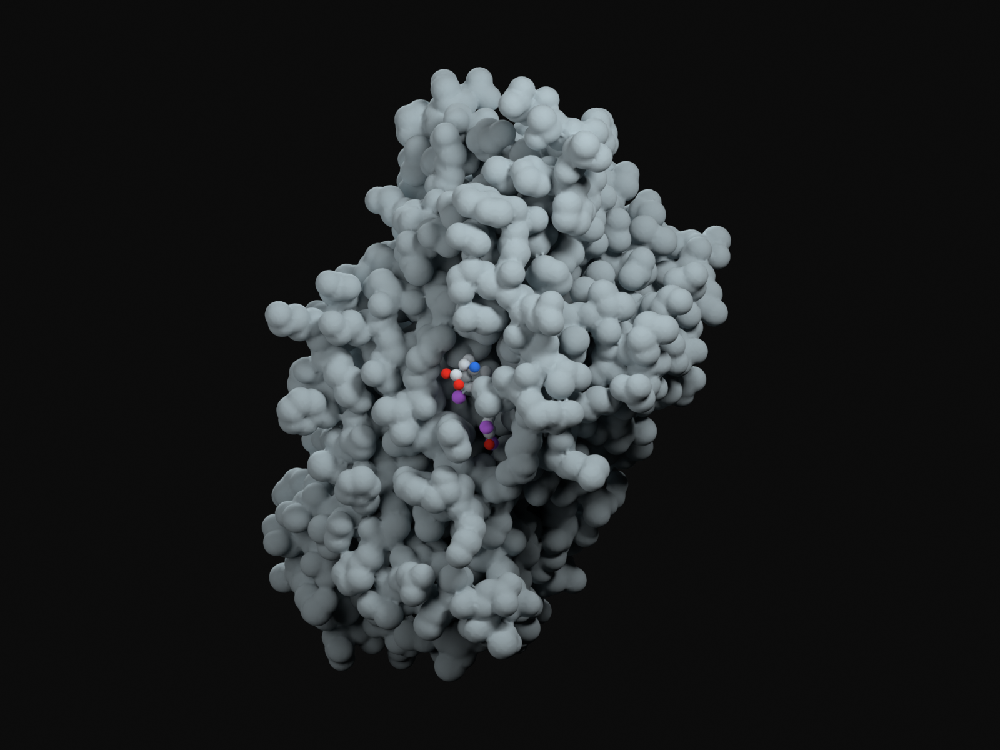
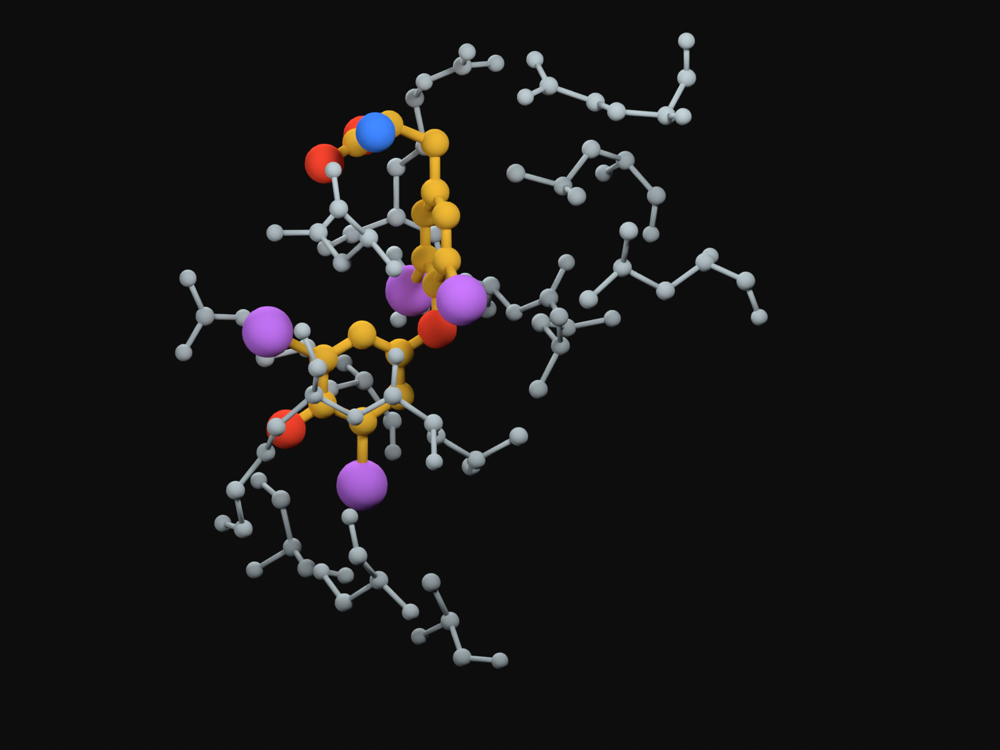

A carrier changes total and free hormone differently
Thyroxine-binding globulin (TBG) carries thyroid hormone in plasma. It differs from thyroglobulin (Tg), the follicular synthesis and storage protein. First inspect one experimentally determined bound complex; then compare two explicitly different equilibrium assumptions.
A · Whole-carrier orientation

B · Bound T4 and its selected neighbours

Molecular key. T4: carbon gold, iodine purple (four atoms), oxygen red, nitrogen blue. Neighbouring protein atoms are grey. Spheres and connectivity sticks are display conventions with reduced radii; cylinders do not encode bond order. No protein–hormone covalent bond or hydrogen-bond network is drawn. Hydrogens are omitted. These are coordinate-derived molecular illustrations, not visible-light photographs or electron-density maps.
Source: PDB 2CEO, biological assembly 1, author chain A; Zhou, Wei, Read & Carrell (2006), Structural mechanism for the carriage and release of thyroxine in the blood. Human TBG sequence expressed in E. coli; X-ray resolution 2.8 Å. The view contains 367 modelled residues/2,899 protein heavy atoms and one 24-heavy-atom T4 ligand. The 12 unobserved residues, waters, glycerol and native plasma glycosylation are not filled or invented. Coordinates and CCD facts are CC0 archive data; the book’s images are new Blender renders. Camera magnification differs between A/B; display pixels are not a shared metric scale. Source/selection/representation record.
One equation, two operating assumptions
The selected carrier-site capacity increases from 90 to 180. All values use the same synthetic concentration unit; K = 9. These are the Chapter 11 equation (11.1) examples, not measured TBG concentrations or an estimated human affinity.
Equilibrium law: bound = capacity × free / (K + free); total = free + bound. A fixed free concentration requires an external source of hormone as binding increases. A closed sample instead fixes total hormone.
Exact endpoint comparison
| Selected condition | Capacity | Free | Bound | Total | Free fraction |
|---|---|---|---|---|---|
| Common starting state | 90 | 1 | 9 | 10 | 10% |
| Reservoir, fixed free | 180 | 1 | 18 | 19 | 5.2632% |
| Closed, fixed total | 180 | 0.501389 | 9.498611 | 10 | 5.0139% |
The closed-sample calculation solves F² + (capacity + K − total)F − total × K = 0 for its positive root. The reservoir comparison holds F = 1 and calculates additional bound hormone. These are different constraints, not competing predictions of one patient.
The 12-second sweep changes a selected parameter through equilibrium states. It is presentation time, not carrier synthesis, binding kinetics or a clinical trajectory. No production, clearance or feedback is modelled. The coordinate images remain fixed: one experimentally bound molecule supplies structural context, not a changing population occupancy or an animated binding path.
Editable-code, source and reproduction record · Chapter 11 binding equation.